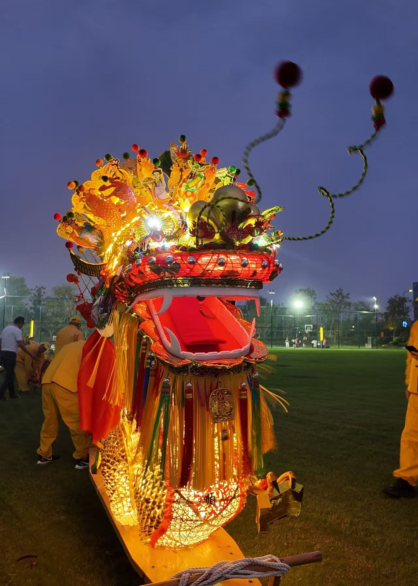
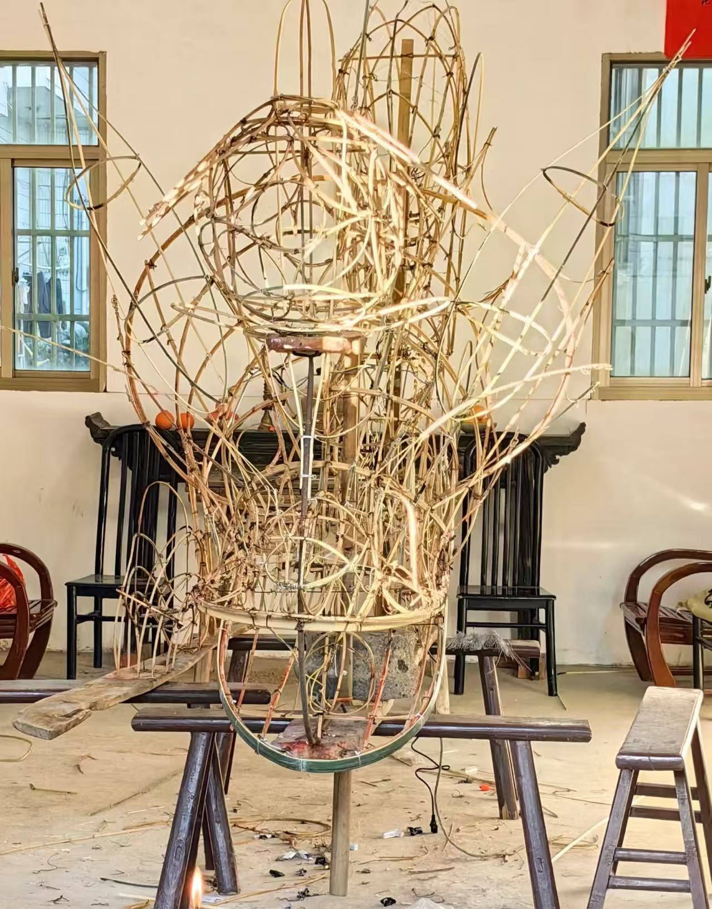
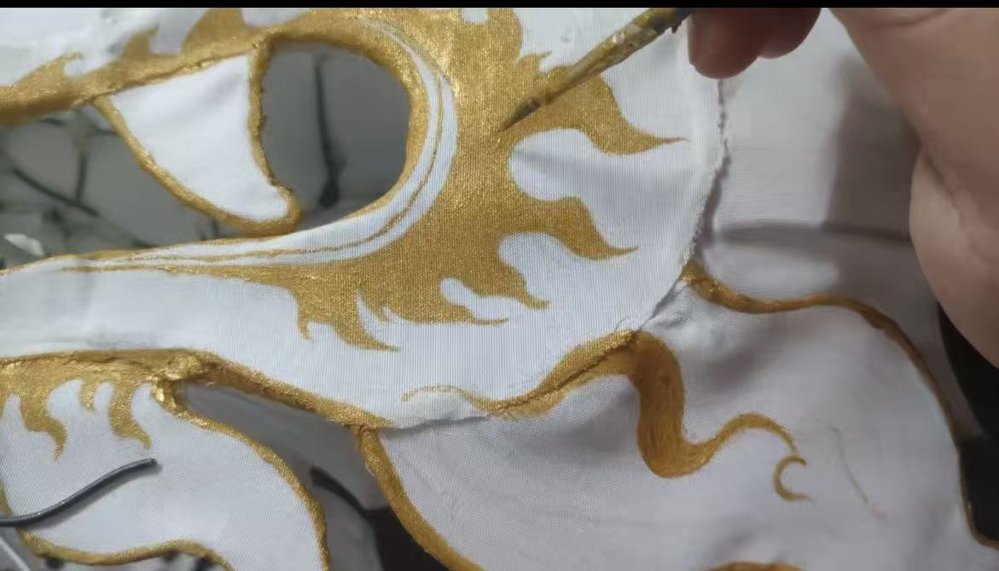

萧山河上龙灯

萧山河上龙灯（河上板龙）是浙江省杭州市萧山区河上镇独有的传统民俗，也是浙江省非物质文化遗产，被誉为 “江南第一板龙”。整条龙由龙头、龙身（灯板）、龙尾三部分组成，以硬木为底座，灯架为竹篾，灯面绘满山水、花鸟、戏曲人物等图案。龙身可长达数百米，由上百节灯板串联而成，夜间点亮时，万灯齐明、流光溢彩，如火龙游街，气势非凡。
制作工艺
河上龙灯的制作工艺集木作、竹编、彩绘、剪纸于一体，工序繁复：
底座制作：选用坚硬的杉木制作灯板底座，每块灯板长约 2 米，宽 0.3 米，为整条龙提供稳固支撑。
灯架扎制：以韧性竹篾扎制灯架，每节灯板上有 4-6 盏花灯，造型各异，有宫灯、花篮灯、人物灯等。
灯面彩绘：灯面以棉纸或丝绸糊裱，绘有三国、水浒等戏曲故事，也有龙凤呈祥、五谷丰登等吉祥图案，色彩艳丽，线条生动。
组装串连：将灯板依次拼接，用榫卯和绳索固定，龙头重达百余斤，由多名壮汉共同抬起，整条龙可根据队伍人数延长，场面壮观。


龙灯历史
河上龙灯的传承已跨越千年，与当地的民俗信仰深度绑定：
起源期（宋代）：河上龙灯起源于南宋，最初是村民为祭祀龙王、祈求风调雨顺而举办的迎神赛会，距今已有 800 多年历史。
鼎盛期（明清）：明清时期，河上龙灯发展至鼎盛，形制愈发精美，规模不断扩大，成为当地春节、元宵期间最重要的民俗活动，有 “河上灯，萧山景” 的说法。
传承期（近现代）：民国时期，龙灯活动依然盛行；改革开放后，龙灯活动得以恢复，2009 年被列入浙江省非物质文化遗产名录，成为萧山文化名片。
文化传承
河上龙灯早已成为河上镇的文化符号，承载着深厚的集体记忆：
乡土认同的纽带：龙灯的制作与迎灯需要全村人共同参与，每一节灯板都代表一户人家，串联起宗族与邻里的情感，是维系乡情的重要载体。
民俗信仰的延续：迎龙灯的过程包含祭祀、巡游、祈福等仪式，寄托了百姓对国泰民安、五谷丰登的祈愿，是传统民俗信仰的活态呈现。
活态保护的典范：如今，河上龙灯不仅在每年春节展演，还走进校园、社区，通过非遗课堂、民俗体验等形式，让年轻人了解传统技艺，让千年龙灯在新时代焕发新生。